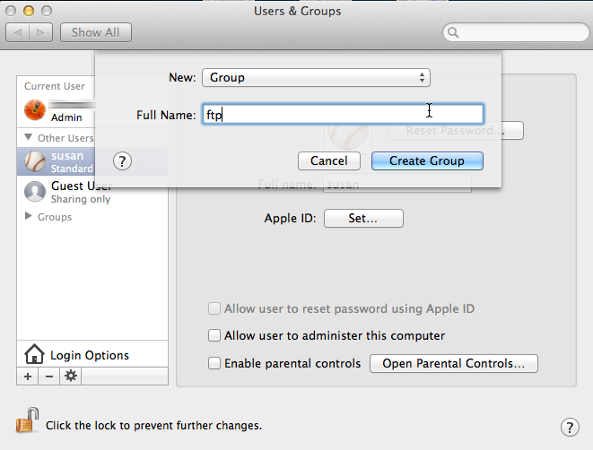
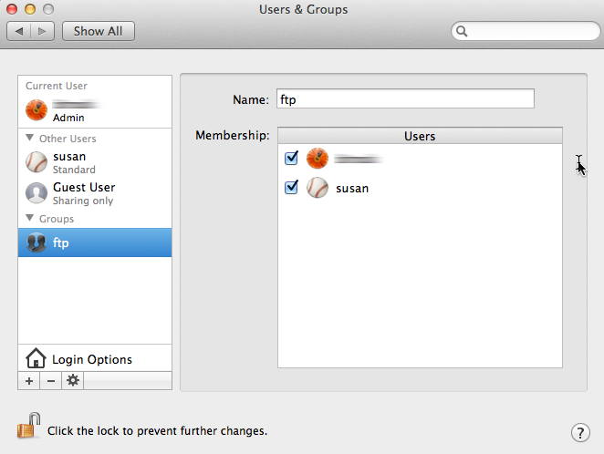
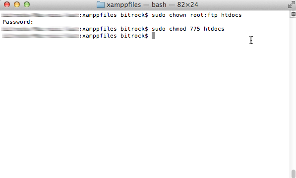
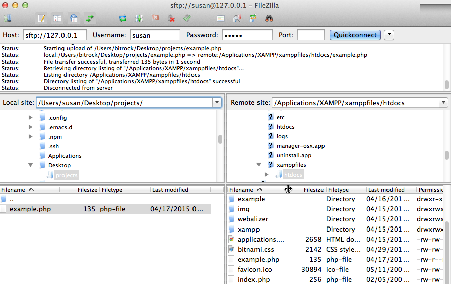
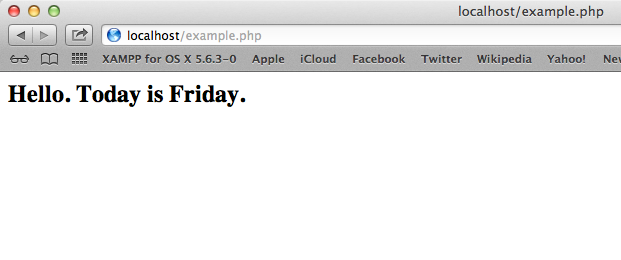

Configure FTP Access
XAMPP includes proFTPD, an open-source FTP server. This makes it easy to transfer files to and from a XAMPP environment using FTP.
To illustrate, assume that you have a simple PHP script named example.php in your home directory containing the following code, that you wish to transfer to the XAMPP server.
<!-- example.php -->
<html>
<head></head>
<body>
<h2><?php echo "Hello. Today is " . date('l'); ?>.</h2>
</body>
</html>
To transfer files via the proFTPD server, you first need to configure FTP access rules. Follow these steps.
-
Open a new terminal and ensure you are logged in as an administrator.
-
Create a new group named ftp. This group will contain those user accounts allowed to upload files via FTP.

-
Add your account (in this example, susan) to the new group. Add other users if needed.

-
Change the ownership and permissions of the htdocs/ subdirectory of the XAMPP installation directory (typically, /Applications/XAMPP/) so that it is writable by the the new ftp group.
cd /Applications/XAMPP/xamppfiles
chown root:ftp htdocs
chmod 775 htdocs

If you’re using XAMPP in a single-user scenario and there will only be one user transferring files via FTP, you can skip creating a new group and instead simply transfer full ownership of the htdocs/ directory to that user. To do this, use a command like chown susan:susan htdocs. -
Ensure that proFTPD is running in the XAMPP control panel.

You can now transfer files to the XAMPP server using the steps below:
-
Start an FTP client and enter connection details as below.
-
If you’re connecting to the server from the same system, use "127.0.0.1" as the host address. If you’re connecting from a different system, use the network hostname or IP address of the XAMPP server.
-
Use "21" as the port for a standard FTP connection or "22" for an SFTP connection.
-
Enter your system username and password as your FTP credentials.
Your FTP client should now connect to the server and enter the /Applications/XAMPP/xamppfiles/htdocs/ directory, which is the default Web server document root.
-
-
Transfer the file from your home directory to the server using normal FTP transfer conventions. If you’re using a graphical FTP client, you can usually drag and drop the file from one directory to the other. If you’re using a command-line FTP client, you can use the FTP PUT command.

-
Once the file is successfully transferred, you should be able to see it in action by browsing to http://localhost/example.php, as shown below:
